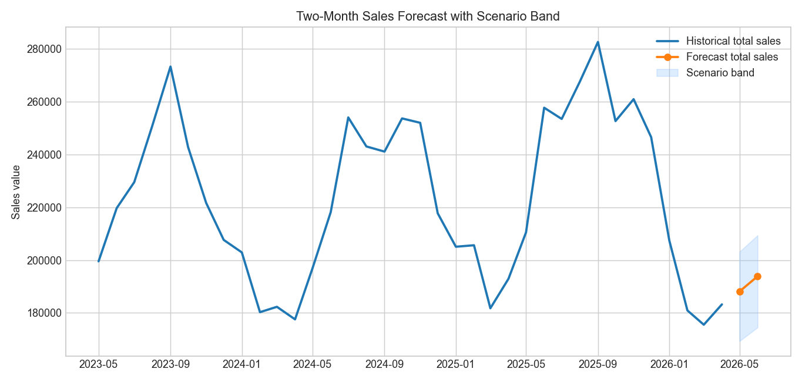

Inventory forecasting with one monthly source file
For this project I wanted a single source of truth: one XLSX table where each row is one month and each column captures either inventory, sales, sell-through, or comparison metrics. I generated 36 months for three products (a-brand, b-brand, c-brand) and made sure the values were not perfectly clean. Real data has weird months, uneven demand, and occasional inventory shocks.
The core question is practical: how much inventory should be ordered for the next two months? Instead of jumping into a complex model, I started with transparent baseline logic and trend-based comparisons. The script computes month-over-month and same-month-last-year changes, then uses recent behavior to produce a simple two-month forecast and a scenario band.
I kept all non-HTML assets in DA-Prediction so this can be rerun at any time. Re-running the script refreshes the 36-month window up to the
current month and rebuilds the charts. That makes the project easy to explain in interviews: one source file, clear feature columns, and a
forecasting approach that can be challenged and improved.